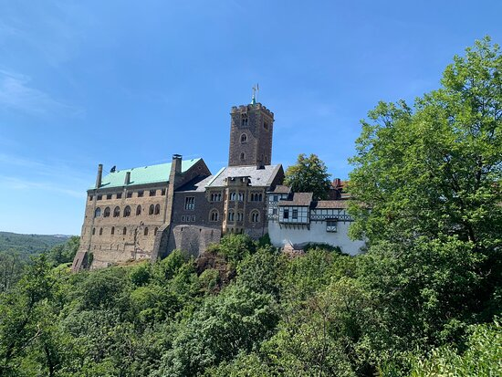
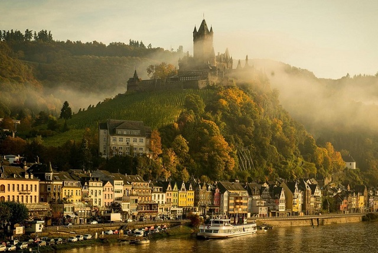
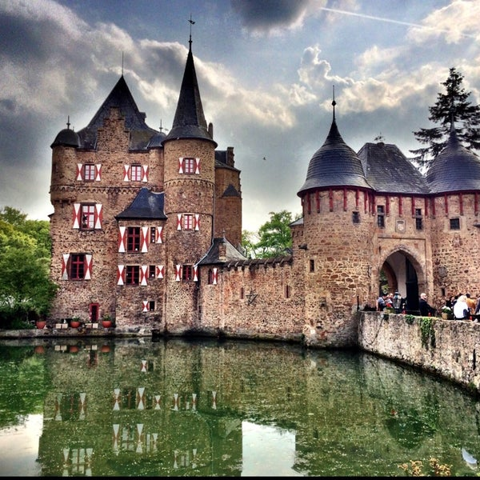

Almanya'da Bulunan Şato ve Kaleler
Almanya sanayi 4.0 ve yapay zeka gibi alanlara odaklanan bir yüksek teknoloji ülkesi. Ama aynı Almanya’da Orta Çağ’a dönüş yapmak için gözlerinizi bile kapatmanızı gerektirmeyecek yerler var. Bu zaman yolculuğunda bize katılın.
Wartburg Kalesi
Bu, belki de Almanya’nın en önemli kalesi. 1067 yılı civarında Almanya'nın Eisenach kasabasında inşa edilen kale, 1521 - 1522 yılları arasında Martin Luther'e de sığınak olmuş, Luther Yeni Ahit'i Almanca'ya burada tercüme etmişti. Alman besteci Wagner'in şarkıcı seçmeleri için oluşturduğu "Tannhäuser" operasına da ev sahipliği yaptı. Wartburg 1999'dan beri UNESCO Kültür Mirası listesinde.
Cochem Şatosu
Moselle nehri üzerinde bir tepeye inşa edilen Cochem Şatosu, aynı adlı kasaba için de tarihi bir öneme sahip. 1100 yılında inşa edildiği sanılan şato, 17. yüzyılda yıkılmıştı. Berlinli bir girişimci olan Louis Ravené, 300 altın mark karşılığında şatoyu satın alarak tekrar, gotik tarzda inşa ettirdi.
Satzvey Kalesi
Hendeklerle korunan en iyi Alman kalelerinden biri yine Kuzey Ren-Vestfalya'da bulunuyor. Satzvey Kalesi'nin tarihi 12. yüzyıla uzanıyor. Caydırıcı hendekler, koylardan gelecek düşmanları uzak tutmak ve kaleyi korumak için kazılmıştı. Kayalıklar, ya da tepe üzerleri gibi coğrafi imkânların olmadığı düz bölgelerdeki kaleler böyle savunuluyordu.